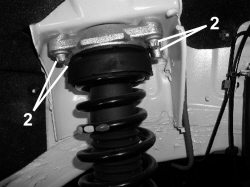
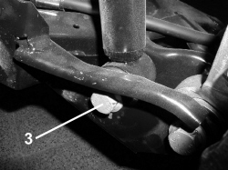
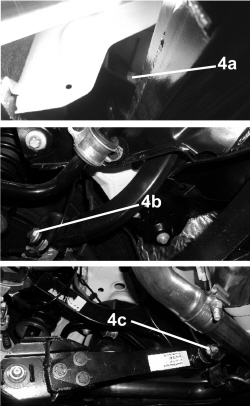
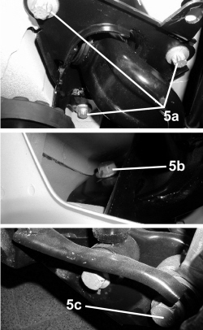
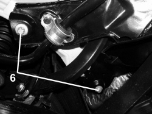
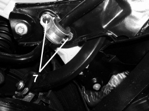
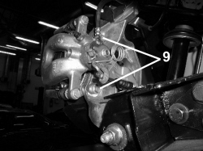

4420OB REAR SUSPENSION CORRECT TIGHTENING CHECK
- Path
- Test > 44 SUSPENSION AND WHEELS > 4420 REAR SUSPENSION > 4420O REAR SUSPENSION TESTS > 4420OB REAR SUSPENSION CORRECT TIGHTENING CHECK
- Kind
- test / check procedure
- Applies to
- engines: 1.8, 1.9 JTS, 2.2 JTS, 3.2 JTS, 1.9 JTD 16V, 2.4 JTD 20V; all production periods
- Interactive page
- https://sloeber94.github.io/elrnDB/alfa/159/en/#/939010258
Applies to: engines: 1.8, 1.9 JTS, 2.2 JTS, 3.2 JTS, 1.9 JTD 16V, 2.4 JTD 20V; all production periods
- Position the vehicle on a two column lift.
- Remove the luggage compartment interior lining side panels.
Op. 7040B18 LOAD COMPARTMENT LOAD PLATFORM SIDE TRIM ONE LH OR RH - R.R
1. Using a torque wrench set to the recommended value, check that the shock absorber plate is tightened to the recommended torque (1).
Type of fastening | Component | Torque (daNm) | |
|---|---|---|---|
1 | Nut M10X1.75 | Shock absorber | 2,5 |

Applies to: engines: 1.8, 1.9 JTS, 2.2 JTS, 3.2 JTS, 1.9 JTD 16V, 2.4 JTD 20V; all production periods
2. Raise the vehicle and check that the various rear suspension fastenings are correctly tightened.
Using a torque wrench set to the recommended value, check that the fastening securing the shock absorber bracket to the bodyshell is tightened to the recommended torque (2).
Type of fastening | Component | Torque (daNm) | |
|---|---|---|---|
2 | Bolt M10X1.5 | Bodyshell | 3 |

Applies to: engines: 1.8, 1.9 JTS, 2.2 JTS, 3.2 JTS, 1.9 JTD 16V, 2.4 JTD 20V; all production periods
3. Using a torque wrench calibrated to the recommended value, check that the lower nut fixing the shock absorber to the longitudinal track control arm (3) is tightened to the torque given below.
Type of fastening | Component | Torque (daNm) | |
|---|---|---|---|
3 | Bolt M14X2 | Longitudinal bar | 13,5 |

Applies to: engines: 1.8, 1.9 JTS, 2.2 JTS, 3.2 JTS, 1.9 JTD 16V, 2.4 JTD 20V; all production periods
4. Visually inspect that the bolts securing the camber rod to the crossmember (4a), the camber rod to the steering knuckle (4b) and the plate to the crossmember (4b) have not loosened.
Type of fastening | Component | Torque (daNm) | |
|---|---|---|---|
4a | Bolt M12X1.75 | Rod to crossmember | 6 + 90° |
4b | Bolt M12X1.75 | Rod to steering knuckle | 6 + 90° |
4c | Bolt M14X2 | Plate to crossmember | 11 + 90° |

Applies to: engines: 1.8, 1.9 JTS, 2.2 JTS, 3.2 JTS, 1.9 JTD 16V, 2.4 JTD 20V; all production periods
- Using a torque wrench calibrated to the recommended value, check that the nut fixing the plate to the longitudinal arm (4d) is tightened to the torque given below.
Type of fastening | Component | Torque (daNm) | |
|---|---|---|---|
4d | Nut M12X1.75 | Plate to longitudinal arm | 7 |

Applies to: engines: 1.8, 1.9 JTS, 2.2 JTS, 3.2 JTS, 1.9 JTD 16V, 2.4 JTD 20V; all production periods
5. Visually inspect that the bolts fixing the longitudinal arm bracket to the bodyshell (5a), the bracket to the longitudinal arm (5b) and the front fastening between the longitudinal arm and the steering knuckle (5c) have not loosened.
Type of fastening | Component | Torque (daNm) + Angle (°) | |
|---|---|---|---|
5a | Bolt M14X2 | Bodyshell | 15 + 45° |
5b | Bolt M14X2 | Bracket | 8 + 90° |
5c | Bolt M14X2 | Steering knuckle | 14 + 60° |

Applies to: engines: 1.8, 1.9 JTS, 2.2 JTS, 3.2 JTS, 1.9 JTD 16V, 2.4 JTD 20V; all production periods
- Using a torque wrench calibrated to the recommended value, check that the rear fixing nut between the longitudinal arm and the steering knuckle (5d) is tightened to the torque given below.
Type of fastening | Component | Torque (daNm) + Angle (°) | |
|---|---|---|---|
5d | Bolt M14X2 | Steering knuckle | 8,5 + 45° |

Applies to: engines: 1.8, 1.9 JTS, 2.2 JTS, 3.2 JTS, 1.9 JTD 16V, 2.4 JTD 20V; all production periods
6. Visually inspect that the rear bolts fixing the crossmember to the bodyshell (6) have not loosened.
Type of fastening | Component | Torque (daNm) + Angle (°) | |
|---|---|---|---|
6 | Bolt M12X1.75 | Crossmember | 12,5 + 45° |

Applies to: engines: 1.8, 1.9 JTS, 2.2 JTS, 3.2 JTS, 1.9 JTD 16V, 2.4 JTD 20V; all production periods
7. Using a torque wrench calibrated to the recommended value, check that the bolts fixing the anti-roll bar to the crossmember (7) are tightened to the torque given below.
Type of fastening | Component | Torque (daNm) | |
|---|---|---|---|
7 | Bolt M8X1.25 | Crossmember | 2,5 |

Applies to: engines: 1.8, 1.9 JTS, 2.2 JTS, 3.2 JTS, 1.9 JTD 16V, 2.4 JTD 20V; all production periods
8. Using a torque wrench calibrated to the recommended value, check that the bolts fixing the connecting rod to the bar (8a) and to the longitudinal track control arm (8b) are tightened to the torque given below.
Type of fastening | Component | Torque (daNm) | |
|---|---|---|---|
8a | Bolt M12X1.75 | Anti-roll bar | 8 |
8b | Bolt M12X1.75 | Longitudinal bar | 8 |

Applies to: engines: 1.8, 1.9 JTS, 2.2 JTS, 3.2 JTS, 1.9 JTD 16V, 2.4 JTD 20V; all production periods
9. Using a torque wrench calibrated to the recommended value, check that the bolts fixing the brake caliper to the steering knuckle (9) are tightened to the torque given below.
Type of fastening | Component | Torque (daNm) | |
|---|---|---|---|
9 | Bolt M10X1.25 | Brake caliper | 5,7 |

Applies to: engines: 1.8, 1.9 JTS, 2.2 JTS, 3.2 JTS, 1.9 JTD 16V, 2.4 JTD 20V; all production periods
10. Using a torque wrench calibrated to the recommended value, check that the bolts fixing the disc brake heat shield to the steering knuckle (10) are tightened to the torque given below.
Type of fastening | Component | Torque (daNm) | |
|---|---|---|---|
10 | Bolt M6x1 | Heat shield | 0,5 |

Applies to: engines: 1.8, 1.9 JTS, 2.2 JTS, 3.2 JTS, 1.9 JTD 16V, 2.4 JTD 20V; all production periods
11. Using a torque wrench calibrated to the recommended value, check that the bolts fixing the steering knuckle to the hub (11) are tightened to the torque given below.
Type of fastening | Component | Torque (daNm) | |
|---|---|---|---|
11 | Bolt M12X1.5 | Steering knuckle | 6,6 |